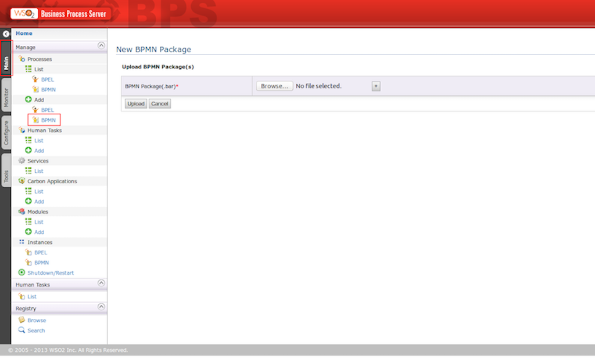
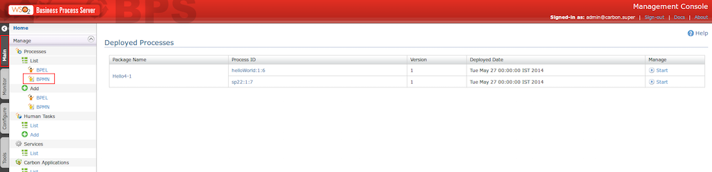
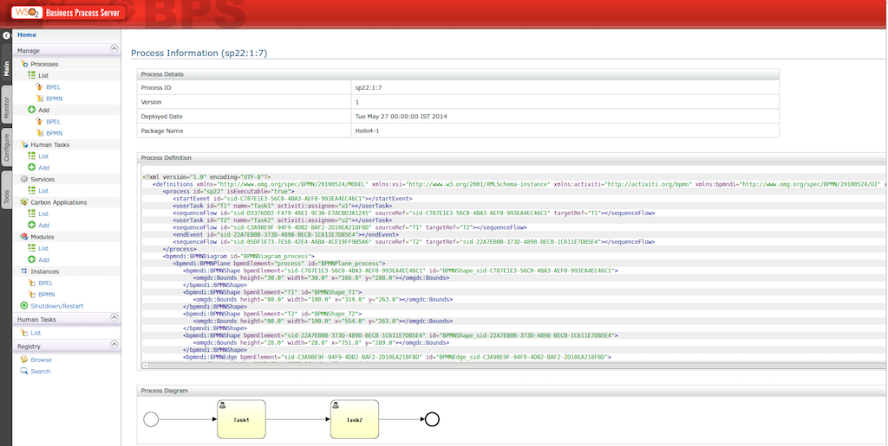
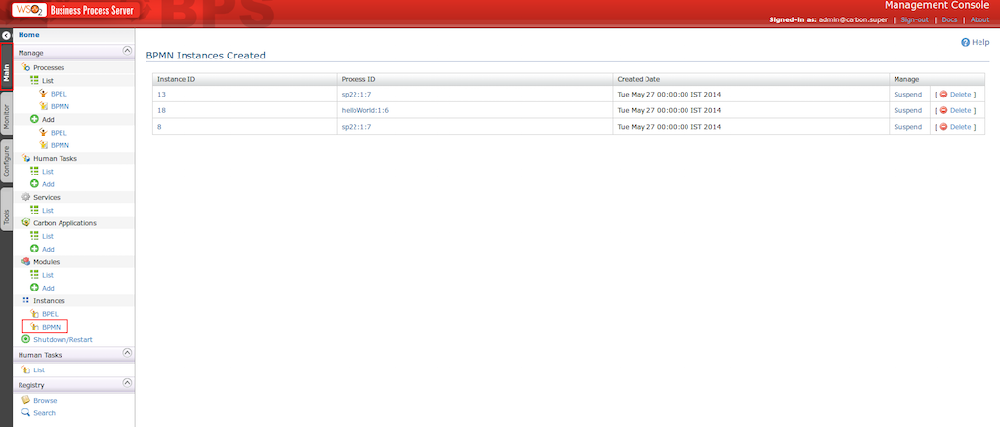

The Business Process Management Initiative (BPMI) has developed a standard Business Process Modeling Notation (BPMN). The BPMN 2.0 specification was released to the public in January, 2011. We have integrated BPMN to BPS server byusingthe Activiti engine which is a light-weight workflow and Business Process Management (BPM) Platform targeted at business people, developers and system admins. It's open-source and distributed under the Apache license. Activiti runs in any Java application, on a server, on a cluster or in the cloud. It is extremely lightweight and based on simple concepts.
As highlighted in the diagram below in red, you can upload BPMN artifacts (.bar extension) by navigating through Main -> Add BPMN
Once you uploaded the artifact successfully you can navigate to the BPMN deployed Processes list and view the deployed processes.
When you click on the package name you will be directed to a page to undeploy the package if necessary.
When you click on the Start link, there will be instance created for that particular process.
When you click on the Process ID you will be directed to Process Information page which contains the process details, process diagram and process definition.
In-order to view the BPMN process instances created, navigate to BPMN instances from the left side navigation panel as shown in the caption below.
You will be able to suspend/activate or delete instances in the Manage section.
In-order to access the BPMN rest service, you can use the following url pattern: https://localhost:9443/bpmn/{serviceName} with respective authentication (default username: admin and password: admin) headers.